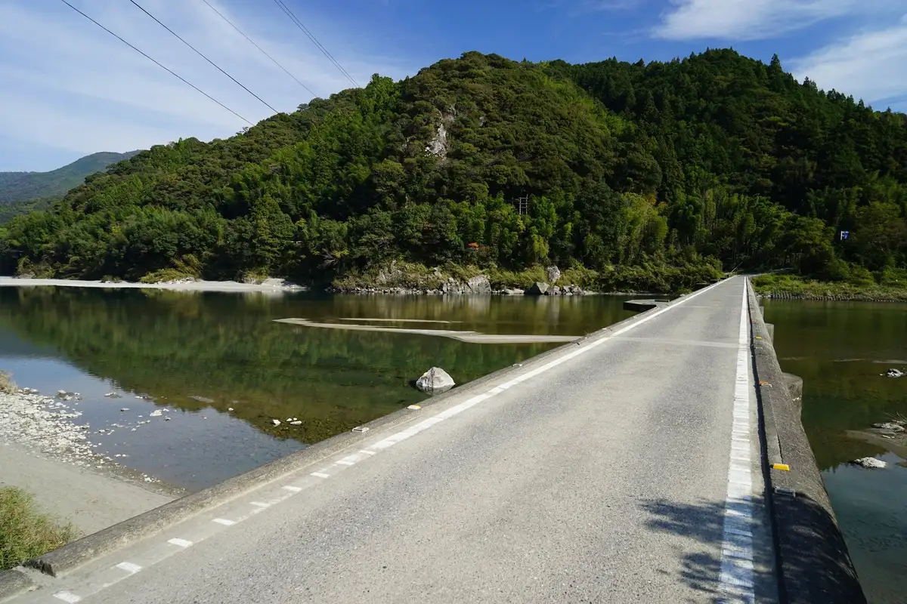
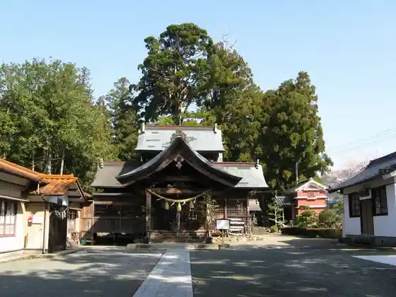
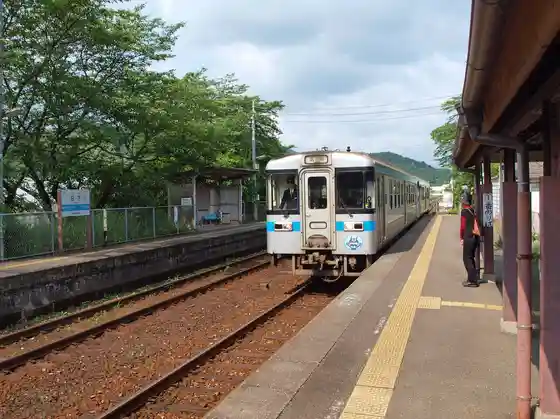

Hidaka
Hidaka · Kochi
Hidaka
Highlighted on the Kochi map.

Stay
Kashikiri Yado Me
Dining
Mura no Chiisa Na Daidokoro Okina
Manma Tei
Ryuho
Emi
Toku no Ya
Kitchinritorushiefu
Miraiekitchin
Osaka Naniwa Dotombori Takoyaki
Sights
Nagoya Ya Chinkakyo
Hidaka Town Hall
Sho Village Shrine

Kusaka Eki

Yanase Hashi